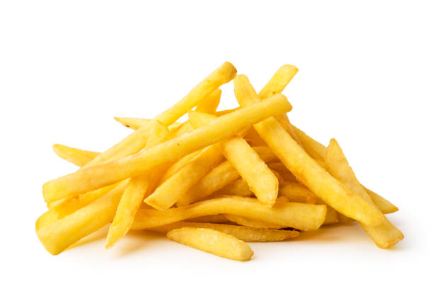

French fries

Description
A hugely popular deep-fried snack recipe made with less starch potatoes. the concept of french fries was popularised by the fast-food chain mcdonalds and served as sides with burger or sandwich meal. store-bought comes with artificial preservatives for the extra stiffness, but the same can be achieved in homemade without any preservatives.
Ingredients
- 4 large potato
- cold water
- oil
- ½ tsp chilli powder
- ½ tsp salt
Steps
- firstly, peel the skin of potato. recommend using maris piper potatoes as they have creamy white flesh and fluffy texture.
- cut into 1 cm thick sticks.
- rinse in ice cold water until the starch runs out clean.
- pat dry in kitchen towel to remove excess moisture.
- now deep fry in hot oil. make sure the oil is approximately 140 degree celcius.
- deep fry for 6 minutes or until the potatoes turn tender. they will not go brown at this stage.
- drain off over kitchen towel and cool completely. if you are looking to freeze the potatoes, then you can freeze the fries in zip lock bag upto 3 months.
- once they are cooled completely, deep fry in hot oil. make sure the oil is approximately 180 degree celcius.
- stir occasionally and fry until it turns golden brown and crisp.
- drain off to remove excess oil.
- now sprinkle ½ tsp chilli powder and ½ tsp salt. mix well.
- finally, enjoy homemade french fries with eggless mayonnaise as an evening snack.